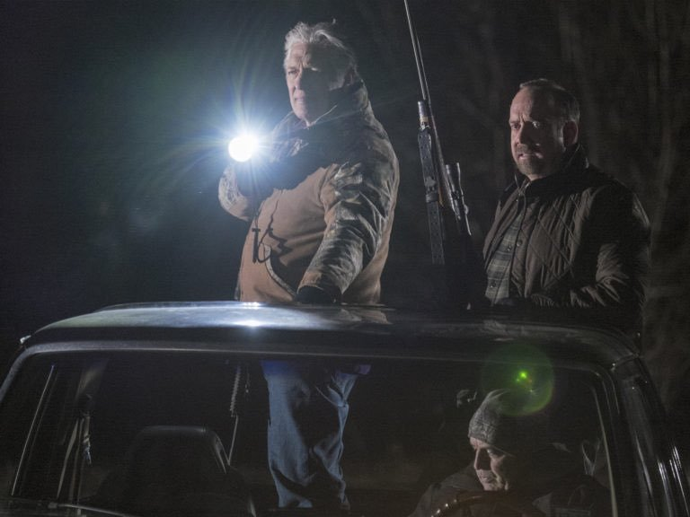

01
西得克萨斯 · 牧场
狩猎被改写成办案指令

剧情事实杰夫科特带查克猎杀袭击牛犊的郊狼，随后把猎物比作即将受审的卢戈，要求查克给予同样的待遇。返回纽约后，凯特坦言相信卢戈出于自卫；查克仍让她用死刑风险争取二十年的认罪协议。[1][2]
这一场为什么重要 · 个人解读
上级把一次射击变成价值排序训练：先决定谁是威胁，再要求下属贯彻。查克试图以较轻认罪替代死刑，但这仍建立在凯特不认同的谋杀起诉上。他能调整伤害的幅度，却暂时没有改变起诉方向，也没有让被告获得真正安全的出口。
因此 → 查克开始用内部折中应对自己无法接受的命令。